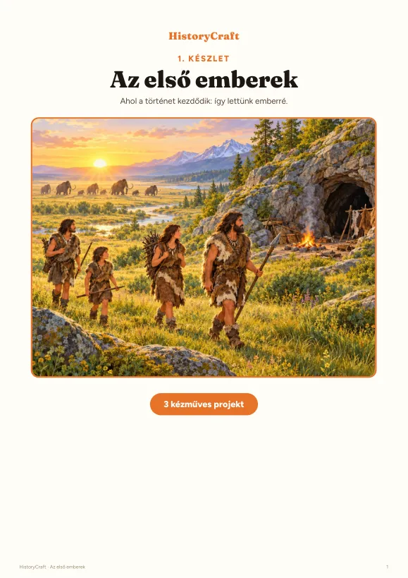
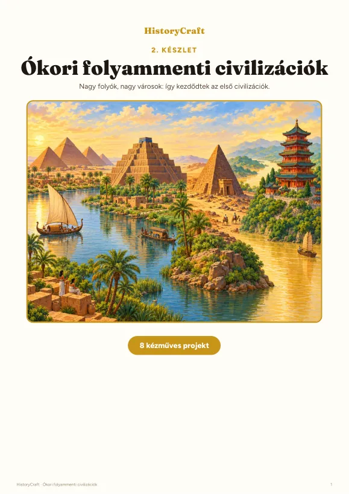
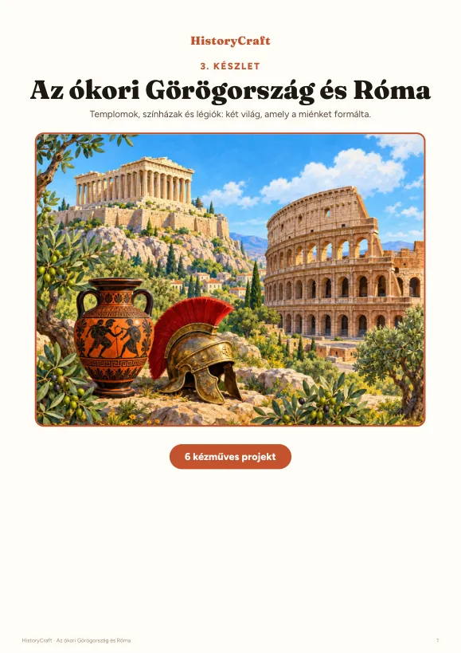
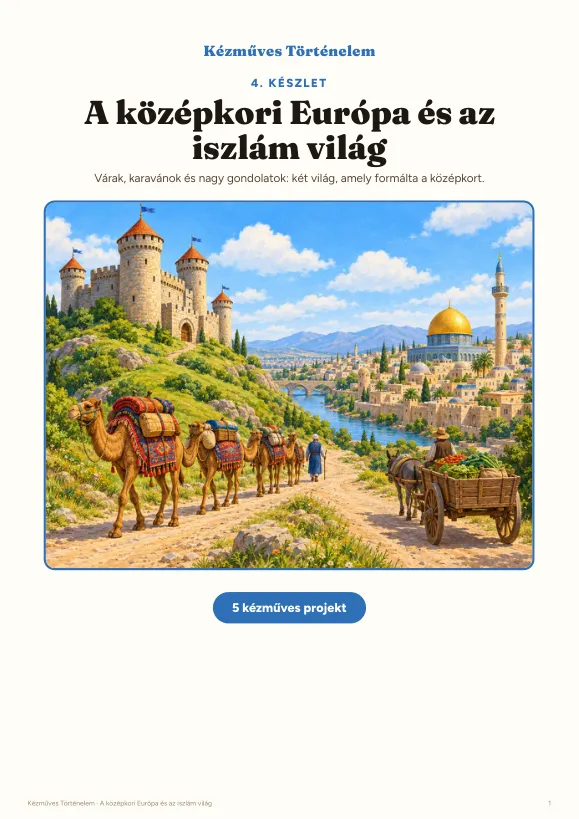
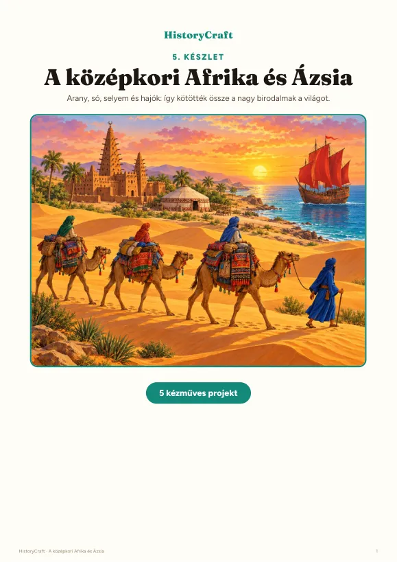
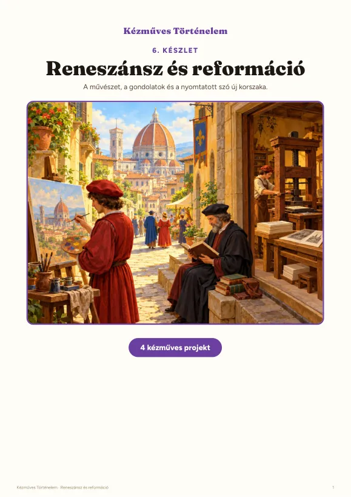
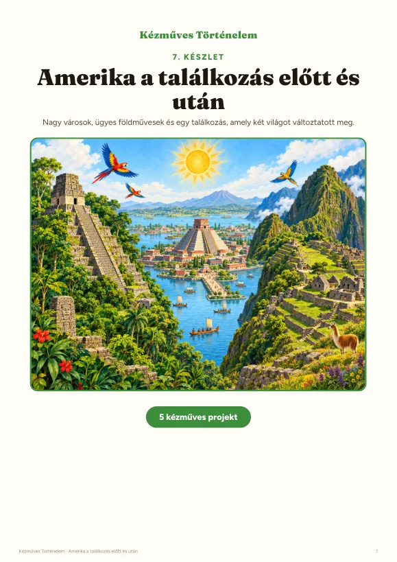
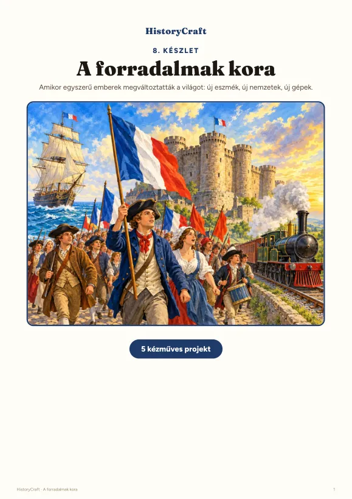
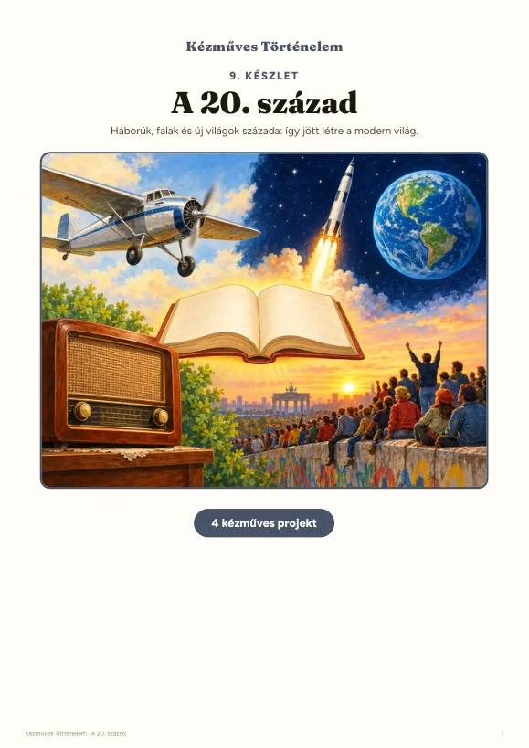

1. készlet
Itt találod mind a 9 készletet PDF-ben. Mindegyik két változatban van: színesben, és fekete-fehérben, hogy a diákok kiszínezhessék. Töltsd le, nyomtasd ki annyiszor, ahányszor csak kell, és már taníthatsz is.









A4-es lapra nyomtass. A 3D makettekhez vastagabb papír (160–200 g) a legjobb, de sima papírral is működnek.
Kezdd az 1. készlettel, vagy azzal a korszakkal, amelyet most tanítasz. Minden készlet elején van egy útmutató a tanárnak.